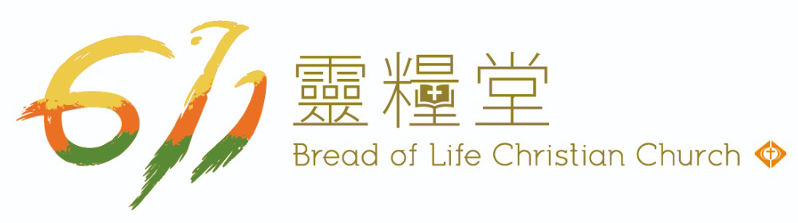

不論你是第一次來，或是想更多認識 611，這裡有你需要的資訊。
現場晨禱：週二至週五 07:00（粵語、普通話同步直播）。週六、日、一只有讀經，沒有直播。
2026 年 11 月 1 日 · 陳牧師（示意）
2026 年 10 月 25 日 · 李牧師（示意）
公告標題為示意文字，由教會提供正式內容。
讓孩子在愛中認識神。
青年人一起成長、同行。
憐憫與關懷的事工。
示意說明，待教會提供。
建立穩固的家庭。
系統地認識信仰與服事。